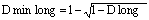
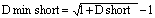

меню Создать окно / Клиентский портфель... или кнопка
,
Отображение текущих позиций клиента по инструментам и максимально возможного количества инструментов для покупки и продажи. В таблице отображаются инструменты классов, указанных в настройке Библиотеки расчета лимитов «Список классов для оценки портфеля» (подробное описание настройки см. в Руководстве «Настройки Библиотеки расчета лимитов», раздел 6 «Классы»). В заголовке окна указаны коды клиента и торгового счета, например «2200
NC0080100000». Каждая строка таблицы соответствует отдельному инструменту.
Одинаковые инструменты, относящиеся к разным классам, отображаются отдельными
строками. В столбцах таблицы отображаются следующие параметры:
Принадлежность инструмента к списку маржинальных инструментов и списку
инструментов, принимаемых в обеспечение маржинального кредита. Возможные значения:
пункт контекстного меню Открыть таблицу [Купить/Продать]
Назначение
Формат таблицы
Параметр
Значение
*
Инструмент
Наименование инструмента
Код инструмента
Код инструмента
* Класс
Наименование класса инструмента
Код класса
Код класса инструментов
*Срок расчётов
Срок расчётов. Значение «Tx» соответствует позиции клиента после совершения всех расчетов
* Тип
Для клиентов типа «МД»:
* Остаток
Текущая позиция клиента по
инструменту с точностью количества инструмента
Вход. оценка
Оценка стоимости позиции клиента до совершения операций, рассчитанная по цене
закрытия предыдущей торговой сессии
* Оценка
Оценка стоимости позиции по цене
последней сделки с точностью валюты цены инструмента
* Покупка
Максимально возможное количество в
заявке на покупку этого инструмента на этом классе, исходя из лучшей цены предложения, без учета комиссии торговой системы и комиссии брокера с точностью количества инструмента. Единица измерения определяется настройками таблицы
* Продажа
Максимально возможное количество в
заявке на продажу этого инструмента на этом классе, исходя из лучшей цены спроса, без учета комиссии торговой системы и комиссии брокера с точностью количества инструмента. Единица измерения определяется настройками таблицы
Лимит (лонг)
Коэффициент дисконтирования, применяемый для длинных позиций по данному инструменту.
Для клиентов типа «МД» поле не заполняется
Лимит (шорт)
Предельный размер короткой позиции по данному
инструменту.
Для клиентов типа «МД» поле не заполняется
** Лонг (коэф)
Предельный размер короткой позиции по данному
инструменту.
Для клиентов типа «МД» поле не заполняется
Покупка(Собств.)
Максимально возможное количество в
заявке на покупку этого инструмента на этом классе на собственные средства клиента, исходя из лучшей цены предложения с точностью количества инструмента. Единица измерения определяется настройками таблицы
Продажа(Собств.)
Максимально возможное количество в
заявке на продажу этого инструмента на этом классе из собственных активов клиента, исходя из лучшей цены спроса с точностью количества инструмента. Единица измерения определяется настройками таблицы
**Лонг (коэф)
Коэффициент дисконтирования, применяемый для длинных
позиций по данному инструменту.
Для клиентов типа «МД» поле не заполняется
**Шорт (коэф)
Коэффициент дисконтирования, применяемый для коротких
позиций по данному инструменту.
Для клиентов типа «МД» поле не заполняется
Оценка (коэф)
Оценка стоимости позиции по цене последней сделки, с
учетом дисконтирующих коэффициентов
Вход. оценка (коэф)
Оценка стоимости позиции клиента до
совершения операций, рассчитанная по цене закрытия предыдущей торговой сессии с учетом дисконтирующих коэффициентов с точностью валюты цены инструмента
Доля
Процентное отношение стоимости позиции по данному
инструменту к стоимости всех активов клиента, рассчитанное по текущим
ценам
Средневзвешенная цена коротких позиций
Средневзвешенная стоимость коротких позиций по
инструментам
Средневзвешенная цена длинных позиций
Средневзвешенная стоимость длинных позиций по
инструментам
Прибыль/убытки
Разница между средневзвешенной ценой
приобретения инструментов и их рыночной
оценки с точностью валюты цены инструмента. Рыночная оценка инструментов для длинных
позиций считается исходя из текущей цены спроса, а для коротких позиций, исходя из текущей цены предложения
**Дисконт корреляции
Для инструментов, не участвующих в
настройках корреляции, значение данного параметра равно нулю и означает,
что оценка этой позиции, при расчёте покупательной способности,
учитывается в полном размере.
Ненулевое значение параметра показывает, что
данный инструмент входит в пару инструментов, для которой производится
частичное неттирование разнонаправленных позиций (формулы для расчёта
оценки короткой и длинной позиций в паре даны в руководстве «Настройки
Библиотеки расчета лимитов», раздел 7 «Инструменты»). Коэффициент корреляции
определяет долю от суммы неттирования, которая остается в оценке короткой позиции.
Указывается в относительных единицах, долях целого. Например, при значении коэффициента
корреляции 0.1 в оценке короткой позиции останется 10% суммы, на которую
уменьшена оценка длинной позиции.
D long
Текущее значение дисконтирующего коэффициента, используемого для расчета начальной и скорректированной маржи для длинных позиций. Устанавливается брокером.
Поле заполняется только для клиентов типа «МД». При D long = 1 поле не заполняется, но при экспорте по ODBC и DDE выводится фактическое значение «1»
D short
Текущее значение дисконтирующего коэффициента, используемого для расчета минимальной, начальной и скорректированной маржи для коротких позиций. Устанавливается брокером.
Поле заполняется только для клиентов типа «МД». При D short = ? поле не заполняется, но при экспорте по ODBC и DDE выводится фактическое значение «1E50»
D min long
Текущее значение дисконтирующего коэффициента, используемого для расчета минимальной маржи для длинных позиций. Рассчитывается следующим образом:

Поле заполняется только для клиентов типа «МД». При D min long = 1 поле не заполняется, но при экспорте по ODBC и DDE выводится фактическое значение «1»
D min short
Текущее значение дисконтирующего коэффициента, используемого для расчета минимальной маржи для коротких позиций. Рассчитывается следующим образом:

Поле заполняется только для клиентов типа «МД». При D min short = ? поле не заполняется, но при экспорте по ODBC и DDE выводится фактическое значение «1E50»
* - параметры, выбранные по умолчанию
** - параметры, значения которых отображаются с точностью до 6 знаков после десятичного разделителя (при этом не учитываются незначащие нули справа)
К таблице может быть применен Режим связанных окон.
| Обозначение | Назначение | D long | D short |
|---|---|---|---|
| <пусто> | Немаржинальный инструмент | =1,0 | +? |
| Д | Маржинальный инструмент, разрешенная только для покупки на заемные средства | <1,0 | +? |
| К | Инструмент, разрешенный только для продажи на заемные средства | =1,0 | <+? |
| ДК | Инструмент, разрешенный для покупки и продажи на заемные средства | <1,0 | <+? |
Данные из таблицы доступны для экспорта через DDE-сервер.
Функции, доступные для данной таблицы, могут быть вызваны из пункта меню Действия или контекстного меню таблицы:
Дополнительно:
См. также: